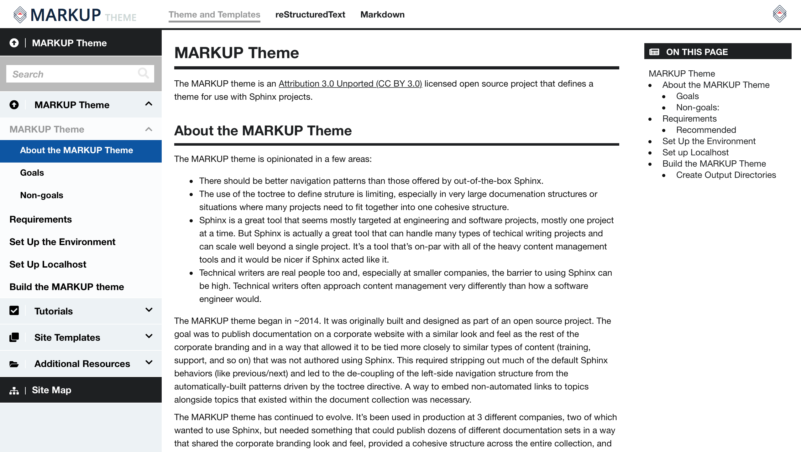

MARKUP Theme¶
The MARKUP theme is an Attribution 3.0 Unported (CC BY 3.0) licensed open source project that defines a theme for use with Sphinx projects.
About the MARKUP Theme¶
The MARKUP theme is opinionated:
- There should be better navigation patterns than those offered by out-of-the-box Sphinx.
- The use of the toctree to define struture is limiting, especially in very large documenation structures or situations where many projects need to fit together into one cohesive structure.
- Sphinx is a great tool that seems mostly targeted at engineering and software projects, mostly one project at a time. But Sphinx is actually a great tool that can handle many types of techical writing projects and can scale well beyond a single project. It’s a tool that’s on-par with all of the heavy content management tools and it would be nicer if Sphinx acted like it.
- Technical writers are real people too and, especially at smaller companies, the barrier to using Sphinx can be high. Technical writers often approach content management very differently than how a software engineer would.
The MARKUP theme began in ~2014. It was originally built and designed as part of an open source project. The goal was to publish documentation on a corporate website with a similar look and feel as the rest of the corporate branding and in a way that allowed it to be tied more closely to similar types of content (training, support, and so on) that was not authored using Sphinx. This required stripping out much of the default Sphinx behaviors (like previous/next) and led to the de-coupling of the left-side navigation structure from the automatically-built patterns driven by the toctree directive. A way to embed non-automated links to topics alongside topics that existed within the document collection was necessary.
The MARKUP theme has continued to evolve. It’s been used in production at 3 different companies, two of which wanted to use Sphinx, but needed something that could publish dozens of different documentation sets in a way that shared the corporate branding look and feel, provided a cohesive structure across the entire collection, and could act as an internal-facing knowledgebase and also as a corporate-branded gateway for a smaller set of customer-facing content. These companies have slower upgrade cycles and require a stable authoring platform measured in years. (This is partly the reason why–for now–the MARKUP theme runs on Sphinx 1.8.5. Plans for moving to 2.0.1 are underway.)
The MARKUP theme represents the common subset of customizations that form the basis of how it’s been used in the wild. (There are additional customizations that are being used in production that are not yet added to the open source MARKUP theme.)
It’s published as an open source project not because it’s expected to take off and become the most popular theme in the world. Quite the opposite. It doesn’t make sense for many engineering and software documentation projects. But we wanted to share the experience and the results. In part to show the possibilities of Sphinx themes and templates, in part to provide something that’s usable and can be experienced right now. In addition, there are so few examples out there for customizing and extending Sphinx. So we put some of those in here too.
The MARKUP theme is still in-use and we hope to continue adding improvements as we make them.
Goals¶
- Enable support for multiple documentation projects within the same site design and user experience
- Separate some navigation elements from the built-in toctree behavior so they may be tailored to your audience
- Provide parity output (same look and feel) for HTML, PDF, and RevealJS presentations as much as possible
- Provide output that can be easily integrated into your company’s public-facing or internal-facing websites
- Extend easily. Customize the navigation, add CSS support for new elements, change the colors and add your brand
- Focus on a useful subset of formatting options
- Open source, Apache CC 3.0 Unported license. You may use it for free and may customize it however you want; some components of the MARKUP theme are pulled in from other open source projects.
- Support the Commonmark Markdown standard via a plugin; this plugin enables side-by-side use of reStructuredText and Markdown and gives Markdown pages access to the docutils library
Non-goals:¶
- Be as cool as all of the various Markdown projects
- Support any non-Commonmark approach to Markdown authoring
- Try to be any of the other existing themes for Sphinx
- Focus on formatting options that are not covered in the included reStructuredText or Markdown formatting guides; they probably all work, but may need some CSS support to look nice
- Focus on automatically documenting content from engineering source code
- Focus on non-HTML, PDF, or RevealJS outputs, such as LaTeX, man page, or ePub; you’ll likely want to use a different theme for those outputs
Requirements¶
The MARKUP theme requires the following applications to be installed on your machine:
Sphinx 1.8.5: https://pypi.org/project/Sphinx/1.8.5/.
Note
Newer versions of Sphinx are (currently) unsupported.
Recommonmark: https://recommonmark.readthedocs.io/en/latest/ (A plugin that enables the use of Markdown that follows the Commonmark standard: http://spec.commonmark.org/.)
WeasyPrint: http://weasyprint.org/ (A tool that prints PDFs from HTML output.)
Sass: https://sass-lang.com/ (A tool that enables easy management of CSS.)
Recommended¶
The MARKUP theme recommends the following:
- A good text editor. For example: TextMate (https://macromates.com/), Atom (https://atom.io/), or EditPad Pro (https://www.editpadpro.com/)
- A source code repository: either a local Git repo (https://git-scm.com/) or one hosted at Bitbucket (https://bitbucket.org/), GitHub (https://github.com/), or GitLab (https://about.gitlab.com/)
- The ability to use http://localhost/ as part of the local development process for your documentation project
- Recommended. Access to a CI/CD environment that can automate builds from your source code repository to a location that can host the static HTML output.
Set Up the Environment¶
The following setup instructions assume the following:
- You are installing on Mac OS
- You are able to run the pip command (for non-Sass applications)
- You are able to install Rubygems (for Sass)
For all other installation scenarios, the steps are similarly easy. Please refer to the linked setup docs for each application for the correct information.
To set up your MARKUP theme environment
-
$ pip install sphinx -
$ sudo gem install sass Install the RevealJS docutils plugin:
$ pip install sphinxjp.themes.revealjsInstall the Recommonmark docutils-compatibility bridge:
$ pip install recommonmarkA documentation project that supports Markdown authoring must add the following elements to the conf.py file:
Under
import sys, osadd:from recommonmark.parser import CommonMarkParser from recommonmark.transform import AutoStructify source_parsers = { '.md': CommonMarkParser, }Change
source_suffix = '.rst'tosource_suffix = ['.rst', '.md'].At the bottom of the Options for HTML output configuration section, add:
def setup(app): app.add_config_value('recommonmark_config', { 'enable_eval_rst': True, }, True) app.add_transform(AutoStructify)-
$ pip install weasyprintand then run
$ weasyprint --versionto verify.Note
In some cases, you will need to make sure that the user running the WeasyPrint installation command can write to the install directory. By default, that requires a command similar to:
$ sudo chown -R $USER:admin /usr/local
Set up Localhost¶
The MARKUP theme must be run as an actual website to ensure certain behaviors, especially for top-level navigation linking, left-side navigation linking, correct highlighting in the left-side navigation. This is true even for local development. You can view any HTML page in any browser to read and verify rendering of formatting elements on the pages themselves—notes, warnings, code blocks, tables, etc.—but linking to other pages and/or using the navigation will not behave correctly. Use localhost to enable correct website behaviors on your local machine.
Mac OS machines have built-in localhost abilities that can be enabled.
Set up localhost on Mac OS
Run the following command:
$ sudo apachectl restartOpen the configuration file:
$ sudo nano /etc/apache2/httpd.confEnable PHP 7.1 by removing the
#from this line:#LoadModule php7_module libexec/apache2/libphp7.so
Restart Apache.
$ sudo apachectl restartOpen the configuration file:
$ sudo nano /etc/apache2/httpd.confand then update
DocumentRootand<Directoryto have the path to the/outputdirectory for the MARKUP theme:$ DocumentRoot "/path/to/markup_theme/output/" <Directory "/path/to/markup_theme/output/">
Restart Apache.
$ sudo apachectl restart
Build the MARKUP Theme¶
The MARKUP theme includes five documentation projects that are designed to fit together to show the entire output of the MARKUP theme, including linked top-level navigation, site-specific left-side navigation, presentations, and PDFs, all built from one source repository, using a common toolset, and with the same user experience.
The MARKUP theme has a default structure of:
$markup_theme
│ _ext
│ _templates
│ _themes
│ images
│ markup_md
│ markup_pdf
│ markup_rst
│ markup_slides
│ markup_theme
│ misc
│───output
│ ├── ...
│ ├── md
│ ├── pdf
│ ├── rst
│ ├── slides
│ README.md
│ shared
│ tokens
Create Output Directories¶
The /output directory (and all of its sub-directories) is created when you run the sphinx-build -b html command, as described in the following sections.
Create the top-level
/outputdirectory:$ sphinx-build -b html markup_theme/markup_theme/source/ markup_theme/output/Create the
/output/mddirectory:$ sphinx-build -b html markup_theme/markup_md/source/ markup_theme/output/md/Create the
/output/rstdirectory:$ sphinx-build -b html markup_theme/markup_rst/source/ markup_theme/output/rst/Create the
/output/slidesdirectory:$ sphinx-build -b html markup_theme/markup_slides/source/ markup_theme/output/slides/Create the
/output/pdfdirectory:$ sphinx-build -b html markup_theme/markup_pdf/source/ markup_theme/output/pdf/This is the directory from which PDFs are printed.
Note
When you are using the MARKUP theme, you do not have to use this exact process for building PDFs. What you need to do is build the HTML to a location that is available to the
weasyprintcommand as a URL. This can at a localhost URL, a localfile:///path, an actual staging URL on an internal corpnet website, a public URL, and so on. The PDF should be built from the source at that URL to a location in the/outputor copied there.To print a PDF, assuming the source HTML output is located at
http://localhost/pdf/and is built to that, same directory as a PDF file, formd.html:$ weasyprint http://localhost/pdf/md.html markup_theme/output/pdf/md.pdfRepeat this for
rst.html:$ weasyprint http://localhost/pdf/rst.html markup_theme/output/pdf/rst.pdf
This should build a website that looks like this:
{kind=link}